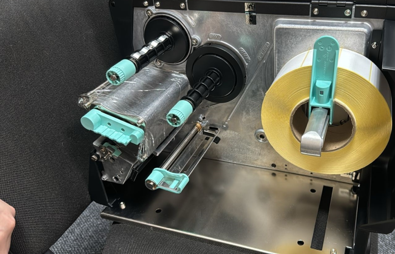
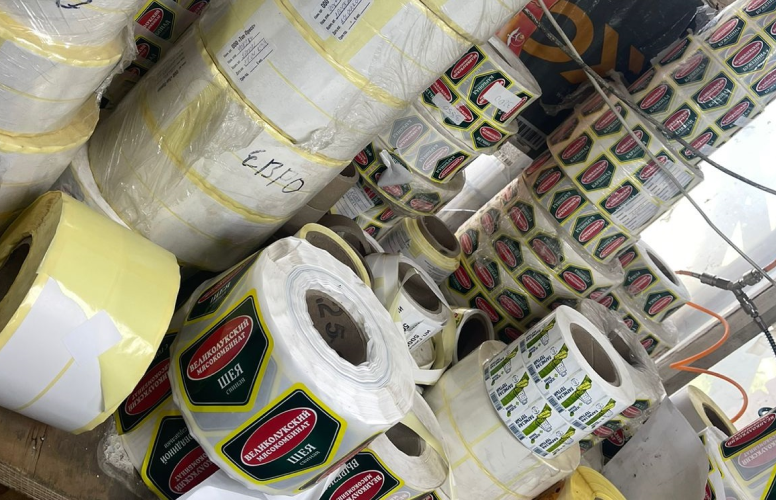

Виды печати гибкой упаковки
Изготовление гибкой упаковки
Вид гибкой упаковки подбирают в соответствии с назначением, характеристиками товара, потребительскими свойствами. Состав полимерной упаковки варьируется от однослойного, двуслойного до многослойного вариантов, при этом можно модулировать различные слои в соответствии с предназначением. К основным материалам причисляют биаксиально ориентированную пленку, неориентированную СПП пленку, полиэтилентерефталат, фольгированные материалы, картон, полиэтилен низкого или высокого давления, бумагу.
Виды гибкой упаковки, выпускаемой нашей типографией.
Дой-пак предназначен для фасовки следующих продуктовых товаров – кофе, всевозможных приправ, конфет, сухофруктов, чая, табака, сгущённого молока, майонеза. Это удобная при транспортировке универсальный многослойный упаковочный материал с гибким дном для демонстрации товара на витрине в вертикальном виде.
Флоу-пак не менее востребованный вид гибкой упаковки, представляет из себя пакет с тремя швами – верхним, нижним и продольным. Швы надежно запечатывают содержимое в виде конфет, снеков, чипсов, специй, стирального порошка, сыров, мыла, санитарно-гигиенических, медицинских товаров.
Твист-фантики или твист-пленка относится к категории ориентированной полимерной упаковки, способной сохранять заданную форму. Изготавливается из полиэтилена, бумаги, ПЭТ, составных материалов методом флексопечати и служит для обертки конфет. Ротогравюрная линия позволяет создать дизайн твист-фантика практически любой формы с четким изображением и привлекательным рисунком с мелким шрифтом.
Еврослот один из самых популярных видов гибкой упаковки для рекламного продвижения разнообразных товаров. Сырьем для производства еврослотов служит в основном полиэтилен низкого давления. Потенциальных покупателей привлекает относительно невысокая стоимость данной полимерной упаковки, возможность печати на ней различных визуальных образов.
Стикеры – разновидность самоклеящихся компактных этикеток с уникальным рисунком, разработанным по индивидуальным проектам.
Стабило – пакет с пятью швами для фасовки сыпучих и гранулированных товаров, с заполнением определенной товарной позицией дно расправляется, принимая устойчивую презентабельную форму.
Саше – вид бумажной или полимерной упаковки для дозированного порционного наполнения пищевыми, косметическими продуктами, тщательно запаянный со всех сторон.
Наши высококлассные специалисты помогут подобрать соответствующий техническому заданию дизайн, оптимальный вид гибкой упаковки, подходящую форму.